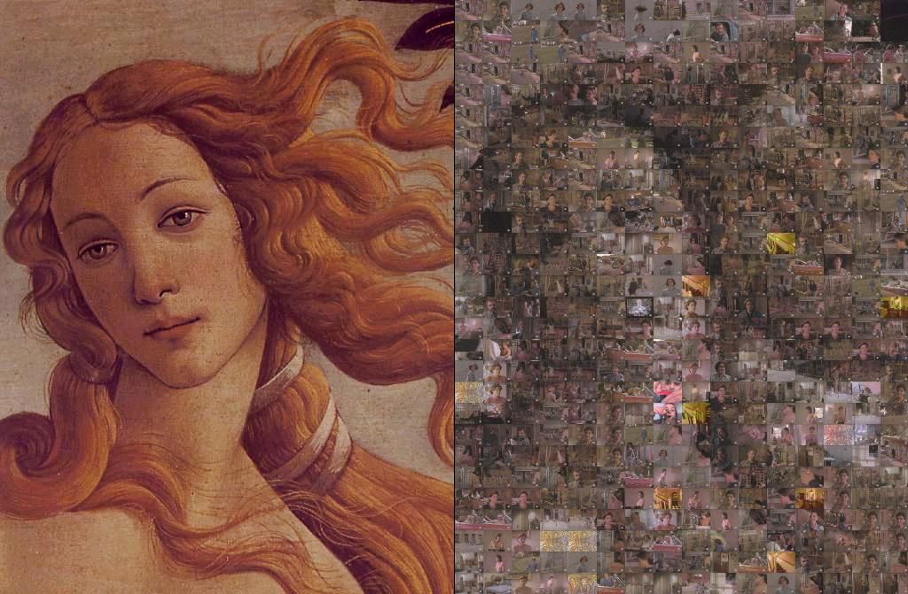

Mosaic's Notice
©2000, Georges-Edouard Berenger, berenger@francenet.fr
©2000, Frank Olivier, frank@diematie.sun.ac.za
Hamburg, 13th November, 2000.
What is Mosaic?
Mosaic creates a mosaic reproduction of any picture using frames captured live from your TV input card.
Here is an example picture below. The left part is the source image, the right part, the reconstructed image
using random TV frames (clic on the image to see it at its normal size).

The goal is purely artistic. Try it on different type of images, with different TV programs.
Let the program work for long for better results.
Requirement
For obvious reasons, you will need a TV capture card supported by BeOS R5 (with or without third party drivers).
It is not required, but it will be handy for you to also have stampTV
to create TV channel presets.
Who is the author?
Mosaic was first written by Frank Olivier, who made the source public.
Because he of his studies (that's what he says... :-), he didn't have the time to make more
improvements to the original version, so when I sent him back some improvements, he immediately
requested that I take over the program.
Since the first version, the main algorithm hasn't changed much in what it does, but has quite
evolved in the way it does it. I have mainly worked on the user interface.
How does it work?
Select an image that you want to reproduce with as a mosaic, and select "Start Processing", and wait that
the result image pleases you. Then select "Save" to save that result image on your disk!
Here is a quick overview of Mosaic's features as found in the menu bar:
- Open Source Image...
Opens a file selector to allow you to select the image you want to reproduce.
You can also simple drag'n drop an image on Mosaic's main window.
- Reload Source Image
You can apply some filtering effects to the source image, therefore, you may want to revert to the original
picture. This item does just that.
- Select Result Image...
You can resume work on an image: for that, first select the original image with the previous methods, then use
this menu item to select the resulting image you want to continue to work on.
You can also drag'n drop a result image directly in the window. If some source image is already loaded, then
if the dragged image has the same size as the source image, you will be able to tell if the newly dragged image should be
used as a source image or as a result image to continue.
- Reload result image
You can also apply some filters to the result image, or you may want simply to revert to the result image
which is stored on your disk. Use this option then.
- Start Processing/Stop Processing
Those options are self explanatory.
- Save Result/Save Result As.../Quit
Do what you'd expect...
- View Source/View Result
Select which image you want to see.
- Blur this Image just a Little/Blur this Image/Blur this Image More
Will apply some blurring effect to the image currently displayed. You can't undo this operation,
but files on disk are not touched. In other words, if your image is not saved on disk, you won't be able
to recover the original image...
Blurring the source image might help Mosaic a little bit, while blurring the result image will help
remove the unpleasant edges of the mosaic. It is a taste question, to use it if/how you wish!
- Monitor
Will allow to show/hide a monitor window showing the current TV image captured. Note that this image is the
pure video source from which is extracted the picture that will be used. That extracted picture is usually much
smaller, with possibly blur effects & cut borders.
It will help you to select the best TV program for your work.
- If you have used stampTV
to create named channel presets, then you will have more useful
menu items in the TV menu. The presets read from stampTV's preference file will be made available allowing
you to change TV channel while working. The shortcuts Alt-'+' and Alt-'-' will allow you to change the channel quickly.
- Clic on any part of the result image
That will tell Mosaic that you are not happy with the frame you have selected, and Mosaic will replace it
with some other frame.
- That's it!
License
This software is an open source freeware.
The authors make no warranties, express or implied, including
without limitation the implied warranties of merchandability and fitness for any particular
purpose, regarding this software. The authors do not warrant, guarantee or make any
representations regarding the use or the results of the use of the software in terms of its
correctness, accuracy, reliability, currentness or otherwise. The entire risk as to the results
and performance of the software is assumed by you.
I'll be glad to hear about your bug reports, problems, comments, flames...
You can mail us directly : Georges-Edouard Berenger
(current maintainer & now main contributor)
or Frank Olivier (the original author).
Mosaic is provided with source code for anyone to play with. If you want to contribute
with any improvement or bug fix, please let us know!
We will see if it makes sence for the official distribution.
Known bugs & problems
- If you can't select the image sizes, or which section of the TV image will extracted, or
which algorithm will be used without editing the source code and recompiling the program.
History
v2.0 (November 13th, 2000)
- Maintenance now done by Geb.
- Cleaned up the source code. Removed many bugs & limitations.
- Added many UI features. Basically, the first release was a working prototype.
This release is now a much more polished product with many options.
- Implemented/fixed the file menu items. Added intelligent file selector functions like:
when you do a first "Save Result" or a "Save Result As", a new name will be derived from the
source's name and the file panel will be opened in the folder where that image is.
- Added alternative drag'n drop support to open images.
- Added image filtering functions.
- Added monitoring.
- Added stampTV presets' support.
- Sped up the code dramatically.
v1.0 (October 16th, 2000)
- Original release by Frank Olivier.